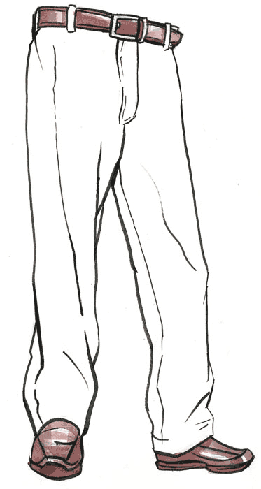

Penny & Cleaves Celebrates International Trousers Day
May 19
P&C is proud to take part in International Trousers Day by offering a
free pair of trousers to anyone who donates $10 or more to Clothes4Souls,
a great charity that facilitates micro-enterprise programs designed to create jobs
in disadvantaged communities around the world. Click Here to participate!

Looking for Summer Interns!
May 1
P&C is now accepting applications for summer internships! Internships are paid and include
positions in the accounting, marketing, IT, sales, and design departments. Please submit a resume,
cover letter, and samples of any relevant coursework. Click Here to apply.
Happy Birthday Dorchester!
February 16
113 years ago today, our signature Dorchester hat was born. Happy Birthday Dorchy! You don't look
a day over 100.